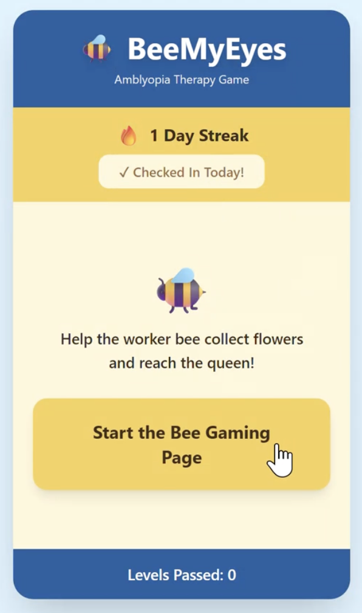
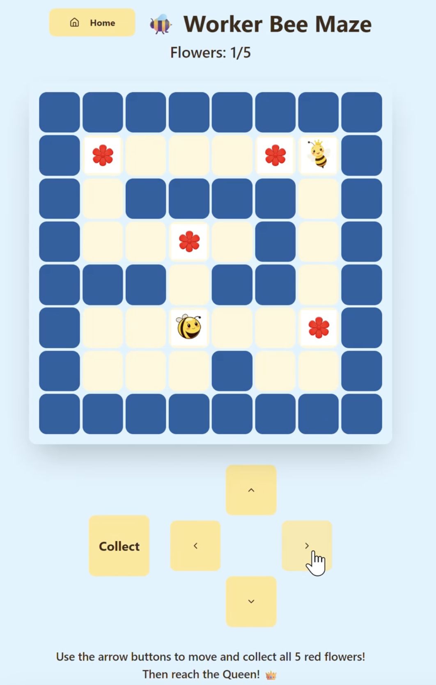
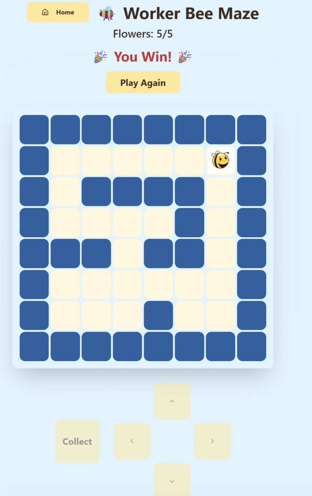

AI Prototyping · Buildathon · Vibe Coding · Game Design
Bee My Eyes — prototyping an amblyopia training game with AI
Prototype Demo: A Playable Game
The Concept
Amblyopia, or “lazy eye,” is the most common cause of vision loss in children - affecting up to 3 in 100 kids. It happens when the brain starts favoring one eye, so the weaker eye never fully develops. Standard treatments mostly focus on forcing the weak eye to work alone.
We spotted a gap: most existing games train the weak eye in isolation and ignore hand-eye coordination, which amblyopia also affects. So we framed our question around cooperation:
How might we help children train their weaker eye and their hand-eye coordination at the same time in something that actually feels like play?
Our solution: Bee My Eyes - a kid-friendly maze game where a worker bee collects flowers and reaches the queen. Worn with red-blue anaglyph glasses, the color design sends different information to each eye, gently pushing the weaker eye to engage while the child uses their hands to navigate.
The Design
We built three core screens in the prototype:



- An interesting theme that carries the therapy. “Help the worker bee reach the queen” gives children a reason to keep going through repetitive visual training.
- Habit design. The streak treats the real challenge, habit, honestly: frequent engagement is the key.
- Adaptive system. The suppression score automatically adjusts contrast without introducing any punishment mechanics.
Learning to Vibecode
This was my first time using Lovable to build a real, working prototype from natural-language prompts. What I learned is that AI prototype building is a design skill of its own, and the quality of what you get out depends heavily on how detailed your prompt is and whether you provide a plausible example to work from.
1. Specificity prompting beats general description
Early on, “put a jar on the left” gave a generic, misplaced result. The output only matched once I described layout concretely, like naming the container, position, icon, and exact label format. I learned to prompt as if I were writing a component description, including every detailed feature I could think of.
2. Calibrating the “vibe” through keywords
I also learned to choose certain phrases carefully. For example, calling the movement arrows “buttons” gave inconsistent results, but prompting for a “control panel (interactive movement buttons)” reliably produced the grouped directional control I wanted.
3. Using our own knowledge to navigate challenges when AI prototyping broke down
Our biggest struggle was movement. Because the game is grid-based, getting the bee to move correctly was surprisingly hard. Left to loose prompts, Lovable would let the bee move diagonally or walk off the board. Fixing it took prompting in the game’s own logic: We identified the movement coordination system through coding and describing movement in x and y coordinates, allowing only one step horizontally or vertically at a time, always within bounds.
Pitch Deck
The full deck our team presented at The Generator Buildathon — the concept, the therapeutic rationale, and the live prototype walkthrough.
Built at The Generator Buildathon 2025 · Team 42